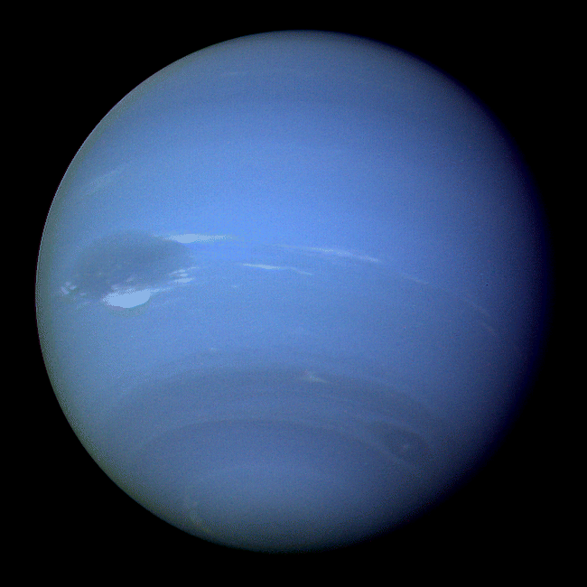

Neptune

- The Neptune
-
Neptune is dark, cold, and very windy. It's the last of the planets in our solar system.
It's more than 30 times as far from the sun as Earth is. Neptune is very similar to Uranus.
It's made of a thick fog of water, ammonia, and methane over an Earth-sized solid center.
Its atmosphere is made of hydrogen, helium, and methane.
-
The methane gives Neptune the same blue color as Uranus. Neptune has six rings, but they're very hard to see.
- Planet Type
- Neptune is a Jovian planet also called an ice giant (instead of a gas giant)
- Moons
- Orbital Period
- Rotation
- One day on Neptune goes by in 16 hours.
- Diameter
- 34,503 miles (55,528) kilometers
- Mass
- Volume
- Composition/Structure
-
Neptune's internal structure is differentiated between a rocky core consisting of
silicates and metals; a mantle consisting of water, ammonia and methane ices
-
The atmosphere consisting of hydrogen, helium and methane gas.
- Temperature
- Facts
- Neptune is named after the Roman God of the Sea
- Neptune has 14 moons
- Neptune is Blue because of Methane
- Neptune has the Strongest Winds in the Solar System
- Neptune is the Coldest Planet in the Solar System
- Neptune has Only Been Visited up Close Once
- References